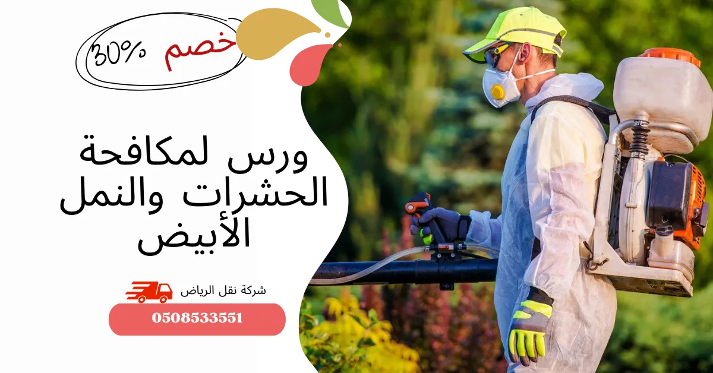

ورس لمكافحة الحشرات والنمل الأبيض بالرياض

تعد مشكلة الحشرات والنمل الأبيض من أكثر المشكلات شيوعًا، حيث أنها تواجه العديد من المنازل والمباني في المناطق الحارة كما تعد الحشرات والنمل الأبيض من الأعداء الصامتين التي قد تتسبب في تدمير الأثاث والبنية التحتية للمنازل، وتؤدي إلى أضرار كبيرة إذا لم تتم معالجتها بشكل سريع وفعال، لذلك يعتبر التعامل مع ورس لمكافحة الحشرات والنمل الأبيض أمرًا بالغ الأهمية لحماية الممتلكات من الأضرار والحفاظ على بيئة منزلية صحية وآمنة.
ورس لمكافحة الحشرات والنمل الأبيض
يعد ورس لمكافحة الحشرات والنمل الأبيض من الحلول الفعالة التي تستخدمها العديد من الشركات المتخصصة في مكافحة
الحشرات بالرياض، حيث يعتبر هذا النظام من الأنظمة الحديثة التي توفر حماية مستدامة ضد الحشرات الضارة والنمل
الأبيض، اللذين يمكن أن يتسببوا في أضرار جسيمة للمنازل والممتلكات، كما يعتمد “ورس” على استخدام مواد
طبيعية وآمنة تعمل على طرد هذه الآفات ومنعها من التسبب في أي ضرر للمنازل أو المباني.
كما يتميز ورس لمكافحة الحشرات والنمل الأبيض بالكفاءة العالية في القضاء على الآفات بشكل نهائي، فـ هو يتمتع بميزة
الأمان حيث يمكن استخدامه دون التأثير على صحة الأشخاص أو الحيوانات الأليفة، و من خلال تطبيقه بشكل دوري يمكنك ضمان
بيئة منزلية خالية من الحشرات والنمل الأبيض، مما يساهم في الحفاظ على ممتلكاتك وحمايتها من التآكل والضرر، يعتبر
ورس خيارًا مثاليًا لمن يبحثون عن حلول فعالة وطويلة الأمد لمكافحة الآفات في المنزل.
صور ورس لمكافحة الحشرات والنمل الأبيض الهفوف
من أكثر الحلول المثالية للتخلص من الحشرات هو ورس لمكافحة الحشرات والنمل الأبيض في الهفوف حيث تستخدم لمكافحة الآفات بشكل آمن وفعال، بالإضافة إلى أنه يتمتع هذا النظام بالكفاءة العالية في القضاء على النمل الأبيض الذي يتسبب في الكثير من الأضرار للمنازل والمباني، ويعتمد ورس على تقنيات حديثة وآمنة بيئيًا، تعمل على حماية المنازل والممتلكات من التهديدات الناتجة عن هذه الحشرات الضارة، يطبق هذا النظام في الأماكن المتضررة من النمل الأبيض، مما يضمن بيئة صحية وآمنة بعيدًا عن الآفات التي قد تسبب أضرارًا كبيرة.
تعرف على أضرار وجود النمل الأبيض
النمل الأبيض يمكن أن يتسبب في أضرار كبيرة لممتلكاتك، وخاصة في الهياكل الخشبية للمنازل حيث يتغذى النمل الأبيض على الخشب والمواد السليلوزية، مما يؤدي إلى تآكل هياكل المنزل وتدهور جدرانه وأثاثه، بالإضافة إلى أنه قد يؤدي وجود النمل الأبيض إلى تدمير الأساسات والخرسانة في بعض الحالات، كما أنه يعتبر تهديدًا كبيرًا للمنازل والمباني ذات الهياكل الخشبية، مما يستدعي اتخاذ إجراءات فورية وفعالة للحد من هذا الضرر باستخدام تقنيات مكافحة متخصصة مثل “ورس“.
الخدمات المتوفرة في ورس لمكافحة الحشرات والنمل الأبيض
توفر شركة ورس لمكافحة الحشرات والنمل الأبيض مجموعة متنوعة من الخدمات المتكاملة، والتي تستخدم لمكافحة جميع أنواع الحشرات والنمل الأبيض والمناطق المحيطة، حيث تقدم الشركة في البداية فحصًا شاملاً لجميع المناطق المشكوك فيها للكشف عن وجود النمل الأبيض، وهذا يتم باستخدام أحدث التقنيات والآلات ثم بعد تحديد المناطق المتأثرة، يتم استخدام المبيدات الحشرية المتخصصة بشكل آمن وفعال حيث تعمل الشركة على حقن المبيد في الأرضيات والجدران المصابة لقتل النمل الأبيض والقضاء على أعشاشه، كما تقدم الشركة خدمات الوقاية من النمل الأبيض عبر العلاجات الوقائية التي تمنع عودة المشكلة في المستقبل بالإضافة إلى ذلك، توفر الشركة خدمات المتابعة الدورية للقيام بعمليات فحص جديدة وتقديم الحلول اللازمة لضمان بيئة خالية من الحشرات، ولذلك اكتشف معنا أهمية التخلص من النمل الأبيض.
حماية الهياكل الخشبية
يتغذى النمل الأبيض على السليلوز الموجود في الخشب، مما يضاعف الهياكل الخشبية ويهدد استقرار المباني، بدون معالجة مبكرة قد يؤدي ذلك إلى انهيار الأجزاء المتضررة من المبنى.
تجنب الأضرار المكلفة
عند ترك النمل الأبيض يتكاثر بدون معالجة قد يتطلب إصلاحات مكلفة في المستقبل، وهذا من خلال القضاء عليه في مراحل مبكرة، يمكن تقليل التكاليف الناتجة عن الأضرار الهيكلية.
حماية الأثاث والديكورات
النمل الأبيض لا يقتصر على تدمير الهياكل الخشبية فقط، بل يمكن أن يضر أيضًا بالأثاث الخشبي والديكورات داخل المنزل، مما يؤثر على مظهر المكان.
تحقيق بيئة آمنة
قد يسبب ضررًا غير مرئي في المباني على المدى الطويل وهذا وجود النمل الأبيض، لذلك يجب التخلص منه حيث يضمن بيئة أكثر أمانًا وخالية من الحشرات الضارة.
الوقاية المستقبلية
مع وجود الخدمات الوقائية المناسبة، يمكن منع عودة النمل الأبيض إلى المنطقة مرة أخرى، مما يساهم في الحفاظ على استدامة المباني لفترات أطول.
أهم نصائح ورس لمكافحة الحشرات والنمل الأبيض
تعتبر مكافحة الحشرات والنمل الأبيض من الأمور الحيوية للحفاظ على المنازل والمباني من الأضرار، التي قد تلحق بها نتيجة هذه الحشرات المدمرة، فإن شركة ورس لمكافحة الحشرات والنمل الأبيض توفر لك الحلول الفعالة والنصائح الهامة لمساعدتك في مواجهة هذه المشكلة بشكل وقائي وفعال.
إجراء فحص دوري للمنزل
ينصح بإجراء فحوصات دورية لجميع أنحاء المنزل، خاصة في المناطق الرطبة والظليلة مثل الأسطح الخشبية، والأنابيب، والمخازن، فإن هذا الفحص المبكر يساعد في الكشف عن أي علامات لوجود النمل الأبيض قبل أن يتسبب في تلف واسع.
التهوية الجيدة للمناطق الرطبة
تأكد من أن جميع المناطق الرطبة في منزلك مثل الأسطح الخشبية، الحمامات، والمطابخ تتمتع بتهوية جيدة، لأن الرطوبة هي بيئة مثالية لتكاثر النمل الأبيض وجميع الحشرات، لذلك قم بفتح النوافذ، واستخدام المراوح أو أجهزة التنقية، يمكن أن يقلل من هذه المشكلة.
استخدام مواد مقاومة للحشرات
من المهم استخدام مواد مقاومة للحشرات مثل الطلاءات الواقية أو المواد العازلة على الأسطح الخشبية في الأماكن المعرضة للرطوبة، هذه المواد تخلق حاجزًا يحمي الخشب من تغذي النمل الأبيض.
عزل الأسطح الخشبية بشكل محكم
قم بعزل الأسطح الخشبية من الأرض مباشرة، حيث أن النمل الأبيض غالبًا ما يتغذى على الخشب الذي يحتفظ بالرطوبة أو الذي يلامس الأرض، استخدم المواد العازلة مثل البولي إيثيلين لفصل الخشب عن الأرض.
الاستعانة بخدمات متخصصة
لتجنب حدوث تفشي مستقبلي للنمل الأبيض، من الأفضل الاستعانة بشركة متخصصة مثل ورس لمكافحة الحشرات والنمل الأبيض، حيث توفر لك حلولاً فعالة مثل المعالجة الوقائية، واستخدام المبيدات الخاصة، والمراقبة المستمرة للمنزل.
من خلال تطبيق هذه النصائح، يمكنك تقليل احتمالية الإصابة بالحشرات والنمل الأبيض وحماية منزلك من الأضرار المدمرة التي قد يسببها.
الأسئلة الشائعة حول ورس لمكافحة الحشرات والنمل الأبيض
ما هي الطرق الأكثر فاعلية لمكافحة الحشرات والنمل الأبيض في المنزل؟
تشتمل الطرق الفعالة لمكافحة الحشرات والنمل الأبيض على عدة حلول، مثل استخدام المبيدات الحشرية المخصصة لهذا النوع من الآفات بالإضافة إلى ذلك، هناك طرق وقائية مثل العزل الجيد للجدران والأرضيات واستخدام مواد مقاومة للرطوبة التي تساعد في تقليل فرص تواجد النمل الأبيض، من الأفضل أيضًا الاستعانة بشركات متخصصة في هذا المجال، حيث يستخدمون تقنيات حديثة مثل الحقن الكيميائي أو التبخير للتأكد من القضاء على هذه الآفات بشكل دائم.
هل يمكنني مكافحة الحشرات والنمل الأبيض بنفسي أم يجب علي التعاقد مع شركة مختصة؟
بينما يمكن لبعض أنواع الحشرات أن تتم معالجتها باستخدام منتجات متوفرة في الأسواق، إلا إن النمل الأبيض يعد من الآفات التي يصعب التعامل معها دون خبرة متخصصة، نظرًا لأن النمل الأبيض يعيش غالبًا تحت الأرض أو في الخشب فإن الوصول إليه ومكافحته يتطلب تقنيات وأدوات خاصة لذلك، ينصح دائمًا بالتعاقد مع شركة مكافحة حشرات متخصصة لضمان القضاء الفعال على الآفات بشكل دائم وآمن.
في الختام، تعد مكافحة الحشرات والنمل الأبيض عملية ضرورية للحفاظ على سلامة المنازل والممتلكات، من خلال التعاقد مع شركات مختصة في هذا المجال، يمكنك التأكد من أن جميع المشاكل المتعلقة بالحشرات والنمل الأبيض سيتم التعامل معها بشكل احترافي باستخدام أحدث التقنيات والمنتجات الفعالة، تأكد دائمًا من اختيار الشركة التي تقدم خدمات موثوقة وآمنة، وتعمل على القضاء على هذه الآفات نهائيًا لضمان راحة منزلك وحمايته.